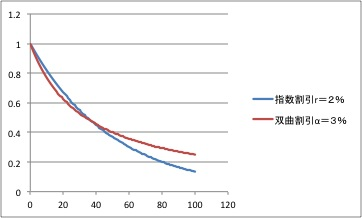

経済学で出る数学
ワークブックでじっくり攻める：応用問題
双曲割引（単利による割引）と指数割引（複利による割引）の逆転現象：連続時間（2015.11.26作成）
$c$円を単利，利子率$R$で割引くと$\dfrac{c}{(1+Rt)}$円，
複利，利子率$r$で割引くと
$ce^{-rt}$円であるが，両者の逆転現象を示す．
$\dfrac{1}{(1+Rt)}$ と $e^{-rt}$ の大小を考察しなさい．
【解答】
$R>r$とする
\[
f(t)=(1+Rt)-e^{rt}
\]
とおく．微分すると $f^{\prime}(t)=R-re^{rt}$ なので，$1$階条件を求めると，
$t=\dfrac{1}{r}\log_{}{\dfrac{R}{r}}$．
$2$階微分は，$f^{\prime\prime}(t)=-r^2e^{rt}< 0 $ なので，ここで最大値をとる．最大値を計算すると，$R\approx r$ に対し
\begin{align}
f\Bigl(\dfrac{1}{r}\log_{}{\dfrac{R}{r}}\Bigr)&
=\Bigl(1+\dfrac{R}{r}\log_{}{\dfrac{R}{r}}\Bigr)-e^{\log_{}{\dfrac{R}{r}}}\\
&=\Bigl(1+\dfrac{R}{r}\log_{}{\dfrac{R}{r}}-{\dfrac{R}{r}}\Bigr)\\
&>1-{\dfrac{R}{r}}>0．
\end{align}
【註】
$\dfrac{1}{r}\log_{}{\dfrac{R}{r}} < t $では減少関数で，
$\lim_{t\to \infty}(1+Rt)-e^{rt}= -\infty$ なのでいずれ，$f(t)<0$となる．
まとめると$f>0$ の領域：$f(0)=0 \nearrow \max_{t}f(t)>0 \searrow f< 0$ の領域．
\begin{align}
f>0 の領域：& \dfrac{1}{(1+Rt)} < e^{-rt} \\
f<0 の領域：& \dfrac{1}{(1+Rt)} > e^{-rt} .
\end{align}
となり，逆転現象が起きる．

【解答終】
【Further Reading】
池田新介『自滅する選択』東洋経済（2012）第3章
ふろく（２）応用問題 一覧へ